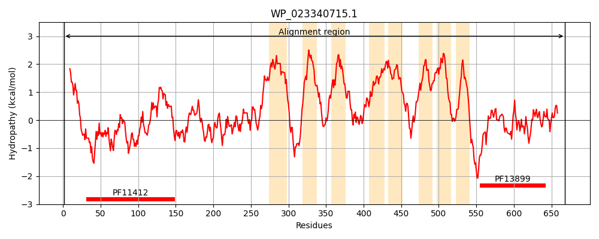
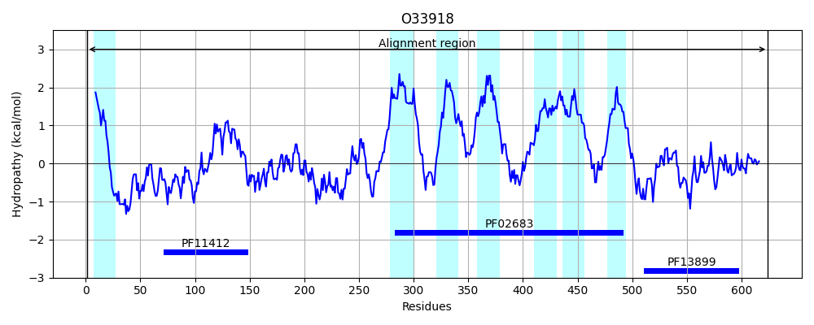
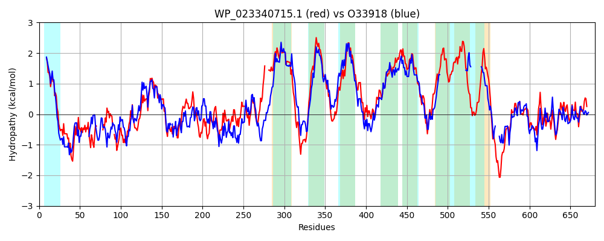

Hit Accession: O33918
Hit TCID: 5.A.1.5.1
Hit Description: gnl|BL_ORD_ID|7119 gnl|TC-DB|O33918|5.A.1.5.1 SUPPRESSOR FOR COPPER-SENSITIVITY B PRECURSOR - Salmonella typhimurium.
Mach Len: 680
e:0.000000
Query TMS Count : 8
Hit TMS Count: 7
TMS-Overlap Score: 5.500000
Predicted Substrates:CHEBI:10545;electron
BLAST Alignment:
Score: 1894 , Bit scores: 734 bits, E-value: 0.0e+00, Alignment length: 680, Percentage identity: 56
Query: 1 MFMVFRRLLVCLLWLWLPVSQAADSGWLRVADNQHASVRLRAQSEGNGDTRLLLDVALEKGWKTYWRSPGE-------GGIAPAIAWHTPL-EVNWRWPTPQRFDVAGISTQGYHGDVSFPMTLRGKIPPTLSGVLTLSTCSNVCILTDYPFSLDMTAPAGEQFNYDFTRAMGTLPLRDGLTSALSASYVSGKLTVTARRDAGWQQPALFIDSMEDVDFGTPSFTSRGDTLTATVPVTDSWGEAAPDLSGKTLSLVLADSGQAQESQIAISAGSTAT----WLALGWVLLMALAGGLILNVMPCVLPVLAMKLGSLVQTERRERGAVRRQFLASVCGIVVSFLALALMMTALRLGNQALGWGIQFQNPWFIGAMALVMVLFSASLLGLFEIRLSSSASTFLATRGGNGLMGHFWQGAFATLLATPCTAPFLGTAVSVALVAPLPLLWGIFFAMGIGMSLPWLLIVAWPGLAQRLPRPGLWMNHLRVVLGLMMLGSALWLVSLLTIHIGRTPVLTLLVILAIGLLLATAWRYRWRTALRAGALAIVVAGAVAFVAQQDGQGPRRDRVNWQPLSEQAIANALAEHKRVFIDVTADWCVTCKANKYNVLLRDDIQQALSAPDVIALRGDWSRPSADISQFLTARGSAAVPFNQIYGPGLPQGQILPALLDREQLLADLSAAKG 668
M ++FRR+L CLLWLWLPVS AA+SGWLR DN HAS+RLRA + NG+T W + W++ G+ G +IAW + EV+W WPTP RFDVA I+TQGYH +V+FPM +RG +P TL GVLTLSTCSNVC+LTDYPFS+ T + F +D+ RAMG +PLR GLT +L Y G+L VTA R AGW P L++D+++DVDF P GD L ATVPVTDSW E APDL K+L+LVLAD AQES I T L V++MAL GGLILN+MPCVLPVL MKLGS++ E + R +RRQFLASV GI+ SF+ALA MT LRL N AL WG+QFQN WFIG MALVM+LFSASL GLFE RL SS +T LAT GGNG+ GHFWQGAFATLLATPC+APFLGTAV+VAL A LP LWG+F A+G+GMS PWLL+ PGLA RLPRPG WMN LR +LGLM +L + W LA ++ F A + Q D V WQPLSEQAI +ALA+HKRVF+DVTADWC+TCK NKYNVL ++D+Q AL PDV+ALRGDW+ PS I+ FL RG AVPFNQ+YGPGLP+G+ LP LL R+ +L L AKG
Sbjct: 1 MMILFRRILFCLLWLWLPVSWAAESGWLRSPDNDHASIRLRADTSANGETGCC--------WMSNWKTAGKLLARAGGRGRGTSIAWKGDMPEVSWFWPTPSRFDVANITTQGYHDEVTFPMIVRGTLPATLRGVLTLSTCSNVCLLTDYPFSVTPTVQNAD-FAHDYARAMGKIPLRSGLTDSLDVGYRPGELVVTATRAAGWSSPGLYLDTVDDVDFAKPRLRVEGDRLQATVPVTDSWAEKAPDLRNKSLTLVLADGAIAQESTQTIGTAPAQTPDNAALPFWQVVMMALIGGLILNLMPCVLPVLGMKLGSILLVEEKSRSHIRRQFLASVAGIIASFMALAAFMTLLRLSNHALAWGVQFQNVWFIGFMALVMLLFSASLFGLFEFRLPSSMTTKLATYGGNGMSGHFWQGAFATLLATPCSAPFLGTAVAVALTASLPTLWGLFLALGLGMSAPWLLVAIRPGLALRLPRPGRWMNVLRRILGLM-------------------------------MLGSAIW------------LATLLLPHFGFTASKSAQ----DTVQWQPLSEQAIQSALAQHKRVFVDVTADWCITCKVNKYNVLQKEDVQAALQQPDVVALRGDWTLPSDAITDFLKTRGQVAVPFNQVYGPGLPEGEALPTLLTRDAVLQTLKKAKG 624 | Protein Hydropathy Plots: |
|---|
|  |  |
Pairwise Alignment-Hydropathy Plot:
|
|---|
|  |